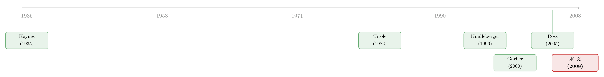

泡沫这个词，为什么能让一位资深教授拍案而起？
本文读的是 O'Hara (2008, Review of Financial Studies)：一篇由午餐演讲整理而成的短文。它不跑回归、不建模型，却做了一件别人很少做的事——把三百年来人们解释「泡沫」的所有思路，按「交易者理性与否」「市场理性与否」两条轴，整理成一张 2×2 的分类表。结论是：泡沫之所以争议不休，不是因为我们数据不够，而是因为我们连「什么是泡沫」都没法操作化地定义；而一旦把理性安放在「少数套利者」而非「每个散户」身上，即便人人疯狂，市场也可能根本没有泡沫。
1 一封震怒的邮件
故事得从一封邮件讲起。
作者 Maureen O'Hara 曾经主编美国金融学会（AFA）会议的最后一期 Proceedings，里面收了 Ritter 和 Welch (2002) 关于 1990 年代 IPO 行为的一篇综述。文章刊出后不久，她收到一封被转抄给她的邮件——一位很资深的金融学者写给同事的内部信，语气相当不客气：怎么能让如此「loose talk」（不严谨的空谈）和「unscientific thinking」（不科学的思维）登上一本主流金融期刊？
那个让他震怒的、罪魁祸首般的词是什么呢？
是「bubble」（泡沫）。文章用它来描述那几年纳斯达克股价的行为。
一个我们今天张口就来、媒体里满天飞的词，居然能在一位严肃学者心里激起这么大的反感。这本身就值得玩味。于是作者干脆把这场午餐演讲的主题，定在了「泡沫」上——但她声明，这不是一篇关于泡沫研究的综述（要严肃的综述，她指向 Brunnermeier, 2001, 2007），而是想换一个角度：从历史出发，看看人们究竟是怎么看待泡沫的，顺带聊聊「什么才算科学」这件事本身。
读到这里，一个自然的问题是：泡沫这个词，到底冒犯了谁？要回答它，得先问一个更基本的问题——我们说「泡沫」的时候，到底在说什么？
2 我们甚至无法定义它
任何关于泡沫的讨论，最自然的起点都是给它下个定义。但麻烦恰恰从这第一步就开始了。
Peter Garber 在《Famous First Bubbles》里说得很直白：泡沫是「a fuzzy word filled with import but lacking any solid operational definition」——一个分量十足、却没有任何扎实可操作定义的模糊词。他建议，泡沫最好被理解为「a price movement that is inexplicable based on fundamentals」（一段无法用基本面解释的价格波动）。照这个说法，泡沫既可以是正的，也可以是负的。他还提到 1926 年版《Palgrave 政治经济学辞典》的定义：泡沫是「any unsound undertaking accompanied by a high degree of speculation」（任何伴随高度投机的不稳健事业）。
但你立刻能看出这个定义的死穴：所谓「unsound」（不稳健），只有事后才知道。换句话说，泡沫只有在它破了之后，我们才能确认它曾经是个泡沫。
后来的定义也没好到哪去。Charles Kindleberger 在《Manias, Crashes, and Panics》（1996）里说，泡沫是「an upward price movement over an extended range that then implodes」（一段持续上行、随后内爆的价格运动）。James Van Horne 在他 1985 年的 AFA 主席演讲《Of Financial Innovation and Excesses》里，甚至觉得「气球」比「泡沫」更贴切：气球被吹大，但未必会「砰」地炸掉，它的瘪下去要更缓和些。Brunnermeier (2007) 则给了个相对没那么有争议的描述：泡沫「typically associated with dramatic asset price increases, followed by a collapse」（通常与资产价格的剧烈上涨、随后崩溃相联系）。
注意，这些定义有一个共同的「作弊」之处：它们都把「随后崩溃／内爆」写进了定义本身。也就是说，按这些说法，不崩的就不算泡沫——而崩没崩，又只能等事后揭晓。这正是那位资深学者火大的根源：一个只能事后确认、无法事前检验的概念，凭什么算「科学」？
那么，就算定义不清，我们能不能「看见就认得」？1720 年的英国议会觉得能——他们通过了著名的《Bubble Act of 1720》，在南海公司（South Sea Company）的混乱之后，干脆一度禁止发行股票凭证（不可谓不极端）。但 Garber (2000) 泼了盆冷水：泡沫解释「should be a last resort because they are non-explanations of events」——应当是万不得已的最后手段，因为它根本不是在解释，只是给一个我们没下功夫去理解的金融现象，随手贴了个标签。
这句话很重，几乎是把半部金融史的「泡沫叙事」一并怼了进去。
3 那，什么会引发泡沫？
定义说不清，那病因总能说说吧？这条线同样源远流长，却同样没有定论。
- Adam Smith（1776）归因于「overtrading」（过度交易）；这词今天听着含糊，在当年似乎人人心领神会。
- Lord Overstone 在 1860 年代描绘了一个完整的周期：从平静（quiescence）出发，经改善、信心、繁荣、亢奋、过度交易、痉挛、压力、停滞，最后又回到平静。听上去很完整，可它没回答最要命的一问：这一切，最开始是被什么点着的？
- Kindleberger (1996) 的答案是「displacement」（位移），他定义为「some sudden advice many times unexpected」——某种突如其来、往往出人意料的冲击。
- Wicksell 则认为是利率太低。
- Posthumus（1929）把它归给了被信贷喂大的非专业买家的涌入。
这些说法都很有画面感，却都不「definitive」（决定性）。作者一针见血：没有哪一个能给出一套操作化的办法，去实证地确认泡沫的存在，也没有哪一个能用来预测泡沫的出现。从这个意义上讲，说「泡沫」不科学，并非毫无道理。
但话锋一转——资产价格确实会，至少相对于理论上的基本面价值，在某些时候显得「无法解释」。绝大多数泡沫研究，正是从这个立足点出发的：假定存在一个「真实」价值，本应锚住资产价格。有了这个支点，问题就变成了：经济学家们究竟是怎么解释泡沫的起源的？
而真正关键的一步在于：作者发现，把所有这些理论摆在一起，它们的分歧可以被两条轴一刀切开——交易者是否理性，市场是否理性。
4 一张 2×2 的分类表
这是全文的核心，也是它最有价值的贡献。作者没有去发明新理论，而是给已有的一切搭了一个脚手架。把「交易者理性/非理性」和「市场理性/非理性」两两组合，就得到四个格子。我们一格一格走。
4.1 理性交易者 + 理性市场：泡沫不该存在
新古典经济学把市场行为看作个体行为的加总。在一篇重要的论文里，Tirole (1982) 证明了：如果交易者拥有完全理性预期（rational expectations）、且共享相同的信息集（same information sets），那么泡沫不会发生。
这个一般均衡下的「泡沫不存在」结果，逻辑其实很朴素：在泡沫里，任何一笔让卖方变好的交易，都会让买方变差；而既然双方信息相同，谁也不会甘愿当那个「接盘」的傻瓜，于是交易根本不会发生。Brunnermeier (2007) 进一步说明，在一个有限期、局部均衡、且理性交易者可以无约束地卖出（或卖空）资产的模型里，也能得到类似的不存在结论。
那理性泡沫就完全无处容身了吗？也不是。在无限期模型里（Blanchard and Watson, 1982），理性泡沫可以存在，但支撑它的条件相当苛刻——通常要求泡沫不能随时间「冒出来」，而必须在资产开始交易之前就已经存在。如果再引入信息不对称，那么即便在有限经济里也能生出泡沫（Allen, Morris, and Postlewaite, 1993）。更晚近的一支文献，则靠「无法套利」来支撑理性泡沫的存在（如 Heston, Lowenstein, and Willard, 2007）。
4.2 理性交易者 + 非理性市场：合成谬误与选美
第二个格子，交易者理性，市场却不理性。Kindleberger (1996) 专门有一节叫「个体的理性，市场的非理性」。驱动这种市场非理性的，是「合成谬误」（fallacy of composition）：每个交易者都相信自己能以更高的价格卖出，而只要他真能卖出，买入对他就是理性的；可问题在于，市场上不可能人人都做到这一点——对个体理性的事，对整体却是非理性的。
这正是 Keynes (1935) 那个著名的「选美比赛」（beauty contest）比喻的变体：人们买股票，不是基于自己认为公司值多少，而是基于自己认为「别人会认为它值多少」。每个人都在理性行事，市场整体却失了方寸。这一格里还住着那句广为流传、一般归于 Keynes 的名言——「Markets can stay irrational longer than you can stay solvent」（市场保持非理性的时间，能比你保持偿付能力的时间更长）。
4.3 非理性交易者 + 非理性市场：人类的「集体发疯」
第三个格子最符合大众想象：市场被「狂热」（manias）裹挟，而交易者本身也不理性。这是 Kindleberger (1996) 反复出现的主题，但它的回声其实早得多。
牛顿（Isaac Newton）——除了那些尽人皆知的成就，他还是南海泡沫里一个亏了钱的失意投资者——留下过一句名言：「I can calculate the motions of heavenly bodies, but not the madness of people」（我能算出天体的运行，却算不出人的疯狂）。两百年后，Van Horne (1985) 表达了几乎相同的感慨：泡沫意味着非理性行为，一种投机的狂热最终攫住了所有人。
Surowiecki (2004) 在《The Wisdom of Crowds》里，提到了 Charles MacKay 1841 年那本《Extraordinary Popular Delusions and the Madness of Crowds》。MacKay 对个体交易者的智商评价很低，对市场的集体智商评价更低，他写道：「人，常言道，是成群结队地思考的。我们将看到，他们也成群结队地发疯，却只能慢慢地、一个一个地恢复理智。」华尔街早年的传奇人物 Bernard Baruch 说得更刻薄：一个人单独看「还算明事理」，可一旦成了人群的一员，「立刻就变成了蠢货」。
读到这里你大概会心一笑：MacKay 若活在今天，读起行为金融（behavioral finance）的论文，怕是要有「他乡遇故知」之感。
（关于「群体」如何亲手吹起泡沫，可参见《怕的不是亏钱，是「跟大家一起穷」——理性人如何亲手吹起一个泡沫》，那篇说的恰恰是另一种可能：不靠非理性，靠「攀比」一样能造出泡沫。）
4.4 非理性交易者 + 理性市场：最反直觉的一格
于是反转出现在第四个格子——交易者非理性，市场却理性。这格最少被认真对待，却可能最有意思。
经典案例是 Garber (2000) 对「郁金香泡沫」（Tulip Bubble）的重新审视。这桩 1634–1637 年发生在荷兰的事件，几乎是教科书里泡沫的「标准像」：郁金香球茎价格暴涨，最珍稀的品种据说卖到了相当于三万多美元的天价，然后从 1637 年起价格崩塌，成了第一桩大泡沫。
但 Garber 说：未必有什么泡沫。他的论点是——新品种的郁金香一向被追捧，价格常常先暴涨、再快速回落，这本就是郁金香市场的常态；况且这一时期想查清真实价格的数据问题不小，而崩盘之后并没有出现泡沫该有的经济萧条；再加上当时黑死病（bubonic plague）正横扫欧洲，可能也搅在其中。他的结论近乎挖苦：这不过是「一场毫无意义的冬日酗酒游戏，由一群被瘟疫缠身、又恰好赶上郁金香市场活跃的人玩出来的」。他还说，那些关于郁金香狂热的精彩故事，对「爱喊泡沫的人」而言简直是「难以抗拒的猫薄荷」，哪怕故事明显是假的——因为它们太适合拿来做道德训诫了。
郁金香到底有没有泡沫，作者说不在她的讨论范围内。但「交易者也许在追逐非理性的策略，市场本身却没有失常」这个论点，本身就足够耐人寻味。历史学家 Carlyle 当然不信这套——「I do not believe in the collective wisdom of individual ignorance」（我不相信由个体的无知能加总出集体的智慧）。
可这一格里站着一位更有分量的辩护者：Ross (2005) 在《Neoclassical Finance》里指出，现代金融从未说过、也从不要求每个投资者都理性。真正要紧的，是市场里有那么几条「鲨鱼」（sharks），也就是套利者——他们埋伏着，等机会出现就猛扑上去。正是这少数人的存在，让市场表现得「理性」，哪怕参与者个个非理性。只要这种机制起作用，我们就又回到了「没有泡沫」的结局——即便交易者全都非理性。
这是整篇文章最漂亮的收口：第一格（人人理性）和第四格（人人疯狂）殊途同归，都指向「没有泡沫」。理性不必长在每个人身上，它只要长在那几条鲨鱼身上就够了。
5 「不科学」的，到底是泡沫，还是我们？
走完四个格子，作者回到了开头那封震怒的邮件。
她借了历史学家 John Gaddis《The Landscape of History》（2004）里的一段话来反问：什么才算「科学」？它当然意味着追求「在尽可能宽广的领域里，达成理性意见的共识」；但 Gaddis 提醒，它还意味着让这个共识与真实世界相连。当你只能靠「与现实脱节」来换取共识，当你看重一般化结论的「结构」甚于它所承载的「实质」，那你冒的风险，是退回到十七、十八世纪科学革命之前的那种思维——亚里士多德、盖伦、托勒密的论断被奉为权威，哪怕相互矛盾的证据就明晃晃地摆在所有人眼前。
这话锋很微妙：它没有简单地为「泡沫」一词翻案，而是把「不科学」的指控反弹了回去。一个拒绝承认价格有时确实「inexplicable」（无法解释）、宁愿守着一个漂亮理论也不肯正视现实的人，未必就比那些「乱喊泡沫」的人更科学。
至于「到底有没有泡沫？市场真的非理性吗？」——作者的回答诚实得可爱：「I am not sure」（我不确定）。她说她只知道市场极难预测，因而看起来「非理性」，但她更偏好一个中立的视角。她甚至要替 Keynes 改一句名言：与其说「市场保持非理性的时间能比你保持偿付能力更长」，不如说「Markets can remain intransigent longer than you can remain solvent」（市场保持「不听话」的时间，能比你撑住的时间更长）。
全文落在 Morgenstern 的一句话上：「A thing is only worth what someone else will pay for it」（一样东西值多少，全看别人愿意为它付多少）。无论在不在泡沫里，这话都成立。
6 文献脉络
把这条线索拉直，你会看到「泡沫」是怎样在两百多年里，从一个道德化的词，慢慢长成一个被理论拆解、又始终拆不干净的问题。
最早的源头是 Adam Smith (1776)，他把泡沫归因于含糊的「overtrading」；这之后是漫长的「描述派」时代——Kindleberger (1996) 集其大成，用「manias / panics / crashes」和「displacement」把历史上一桩桩狂热编织成叙事。真正把刀架在「泡沫」脖子上的转折，是 Tirole (1982)：他用理性预期证明了，在最干净的世界里泡沫根本不该存在，从此「泡沫为何能存在」成了一道需要靠引入摩擦（无限期、信息不对称、套利受限）才能回答的理论难题。与之并行的，是 Keynes (1935) 选美比喻所代表的「市场非理性」传统。
到了世纪之交，分歧达到顶点：Garber (2000) 几乎要把郁金香泡沫从泡沫名单里除名，Ross (2005) 则用「少数套利者」论证市场可以在非理性交易者之上保持理性。本文 O'Hara (2008) 站的位置，不是这条线的任何一端，而是它的「上方」——她不下场争论，而是把整条线索铺成一张 2×2 的地图，让你看清每一派各自站在哪一格。

（如果你想看「泡沫」这个词在更晚近、更实证的语境里被如何使用，可参见《泡沫：一个我们至今定义不清、却又绕不开的词》，以及《泡沫里，市场给创新贴错了两次价签》——后者恰好提供了一个「价格确实错了」的实证样本，与本文的怀疑论形成有趣的对照。）
7 评论与延伸（Q&A + 研究方向）
(a) 几个可能的疑问
Q：这是一篇没有数据、没有模型的「午餐演讲」，为什么值得读？
因为它做的是「整理坐标系」而非「添一块砖」的工作。绝大多数泡沫论文都默认自己站在某一格（比如行为派默认非理性交易者），却很少意识到对立格子的存在。这张 2×2 表的价值，在于它逼你回答：你说的「泡沫」，前提到底是交易者疯了，还是市场疯了，还是两者都疯了？很多争论其实是因为双方站在不同格子里各说各话。
Q：第一格（人人理性）和第四格（人人非理性）都得出「没有泡沫」，这不矛盾吗？
不矛盾，这恰是全文最精彩的地方。第一格靠的是「每个人都理性、所以无人接盘」；第四格靠的是「只要有少数理性套利者（鲨鱼），市场价格就被拉回理性」。理性所在的位置不同——一个在「全体」，一个在「少数」——但结论相同。这说明「市场是否有泡沫」不取决于多数人理性与否，而取决于套利机制是否有效。
Q：Garber 说郁金香「没有泡沫」，靠谱吗？
他的证据是间接的、也坦承数据有限：理由包括新品种球茎本就价格大起大落、崩盘后没有出现经济萧条、以及黑死病的干扰。这些更像是「替代解释」而非「证伪」。作者本人也明确表示郁金香有没有泡沫不在她讨论范围内。所以这里要读的不是「郁金香无泡沫」这个结论，而是「即便交易者追逐非理性策略，市场也未必失常」这个逻辑可能性。
Q：那位资深学者骂「unscientific」，他错了吗？
作者并不认为他全错——她明确承认，现有的泡沫解释没有一个能给出操作化的检验或预测，从这个意义上「不科学」的批评站得住。她的反击更微妙：借 Gaddis 之口指出，为了守住理论的优美而无视眼前的反常证据，同样不科学。换句话说，真正的科学态度是承认「价格有时确实无法解释」，而不是用一个漂亮模型把它定义掉。
Q：这篇 2008 年的文章，和后来的「理性泡沫」「套利限制」文献是什么关系？
它是一张「导览图」而非前沿成果。文中提到的 Blanchard-Watson（无限期理性泡沫）、Allen-Morris-Postlewaite（信息不对称）、Heston-Lowenstein-Willard（套利受限）等，都是把泡沫塞回理论框架的关键尝试。本文的贡献是告诉你这些尝试各自在「松动」哪一个假设（共同信息、有限期、可自由套利），从而落进哪一格。
Q：对今天做信用市场/流动性的人，这张表有什么用？
很有用。当我们说某类资产「定价过高」「有泡沫」时，其实暗含了一个关于「谁不理性」的假设。比如公司债危机中的「火线甩卖」，争论的核心往往不是交易者疯不疯，而是「套利的鲨鱼」为什么没及时出现——这正好落在第四格的反面：套利机制失灵时，非理性交易者的冲击才会留在价格里。
(b) 几个可能的研究问题与提案
1. 把「四格」做成一个可检验的实证框架
【经济故事】本文最大的遗憾是停在分类，没给出区分四格的实证办法。一个自然的问题是：能否设计一组检验，在事件中识别出「是交易者非理性，还是套利失灵」？比如在某次价格异动里，同时观测散户订单流（交易者侧）与套利者/做市商的资金约束（市场侧）。 【可行性】中。难点在于「理性」不可直接观测，只能用代理变量（散户占比、套利者杠杆、卖空约束）。数据上，散户订单流、机构持仓、券源紧张度都可得，识别要靠某种外生冲击（如券商宕机、做市商风险限额变动）来分离两条通道。
2. 公司债市场里的「鲨鱼」何时缺席
【经济故事】Ross 的「少数套利者」论断，在股票市场或许成立，但在公司债这种分割、低流动的市场里，套利者本身就常被资金约束捆住手脚。那么「价格脱离基本面」更可能源于第四格的反面——套利机制失灵，而非交易者疯狂。 【可行性】高。可用 TRACE 成交数据 + 同一发行人多只债券的相对定价偏差，刻画「套利空间存在却无人填补」的时刻，并把它和做市商资产负债表压力对齐。识别可借危机期（如 2020 年 3 月）的外生流动性冲击。
3. 外资持有人是「鲨鱼」还是「羊群」？
【经济故事】在新兴市场或本国信用市场里，外资常被指为泡沫的推手（羊群、追涨杀跌）。但按本文的框架，外资也可能是那条把价格拉回理性的鲨鱼。同一类投资者，落在哪一格，取决于他们到底在套利还是在追逐动量。 【可行性】中。需要分国别、分投资者类型的持仓-交易数据（如 EPFR、各国托管数据），并用「可投资度」或指数纳入这类外生事件做识别。挑战在于把「稳定套利」与「追涨杀跌」在数据里分开。
4. 「事后才知道」的定义难题，能否用期权市场绕过？
【经济故事】本文反复强调泡沫只能事后确认。但期权价格里含有市场对「崩盘概率」的事前定价。能否用隐含的尾部风险，构造一个「事前的泡沫指标」，从而把泡沫从「事后标签」变成「事前可测量」？ 【可行性】中。数据上指数期权与个股期权的隐含分布都可得；难点在于：高崩盘概率究竟反映「泡沫」还是「理性的风险溢价」——这又绕回了本文那个无解的定义问题，需要诚实地承认指标的局限。
8 参考文献
我的判断：这是一篇「以退为进」的文章。它放弃了给泡沫一个干净定义，也放弃了选边站队，转而做了一件更耐用的事——给整个争论搭了一张坐标系。它最大的贡献，是让读者意识到「泡沫之争」常常是「假设之争」：你认定谁不理性、套利是否有效，几乎就决定了你的结论。它最大的弱点，也正是它的体裁所限：分类清晰，却不提供任何区分四格的实证抓手，所有判断最终都停在「I am not sure」。如果要往前走，我最想看到的，是有人把这张 2×2 表真正「操作化」——用可观测的代理变量，把「交易者非理性」和「套利失灵」这两条通道在数据里分开。在公司债与外资持有人这种套利天然受限的市场里，这件事既最有意义，也最有可能做出来。
Allen, F., S. Morris, and A. Postlewaite (1993). Finite Bubbles with Short Sale Constraints and Asymmetric Information. Journal of Economic Theory 61(2), 206–229.
Blanchard, O. J., and M. W. Watson (1982). Bubbles, Rational Expectations, and Financial Markets. In P. Wachtel (ed.), Crisis in the Economic and Financial Structure. Lexington, MA: Lexington Press.
Brunnermeier, M. K. (2001). Asset Pricing under Asymmetric Information: Bubbles, Crashes, Technical Analysis, and Herding. Oxford: Oxford University Press.
Brunnermeier, M. K. (2007). Bubbles. In L. Blume and S. Durlauf (eds), The New Palgrave Dictionary of Economics. Oxford: Oxford University Press.
Gaddis, J. L. (2004). The Landscape of History: How Historians Map the Past. Oxford: Oxford University Press.
Garber, P. M. (2000). Famous First Bubbles. Cambridge, MA: MIT Press.
Heston, S. L., M. Lowenstein, and G. A. Willard (2007). Options and Bubbles. Review of Financial Studies 20, 359–390.
Keynes, J. M. (1935). The General Theory of Employment, Interest, and Money. New York: Harcourt, Brace & World.
Kindleberger, C. P. (1996). Manias, Panics and Crashes: A History of Financial Crises, 3rd ed. New York: John Wiley & Sons.
Malkiel, B. G. (1985). A Random Walk Down Wall Street, 4th ed. New York: Norton.
O'Hara, M. (2008). Bubbles: Some Perspectives (and Loose Talk) from History. Review of Financial Studies 21(1), 11–17.
Ritter, J., and I. Welch (2002). A Review of IPO Activity, Pricing and Allocations. Journal of Finance 57(4), 1795–1828.
Ross, S. (2005). Neoclassical Finance. Princeton, NJ: Princeton University Press.
Smith, A. (1776). An Inquiry into the Nature and Causes of the Wealth of Nations. London: Methuen and Co., Ltd. (5th ed., 1904).
Surowiecki, J. (2004). The Wisdom of Crowds. New York: Random House.
Tirole, J. (1982). On the Possibility of Speculation under Rational Expectations. Econometrica 50, 1163–1182.
Van Horne, J. C. (1985). Of Financial Innovations and Excesses. Journal of Finance 40(3), 620–631.